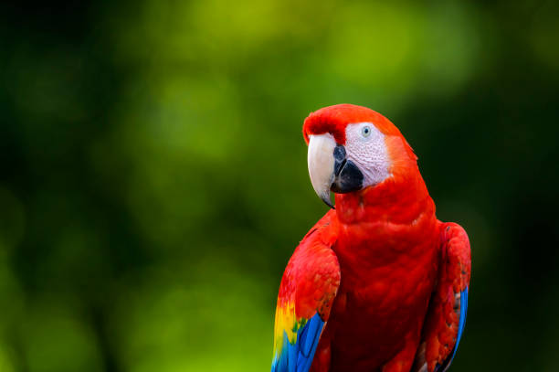
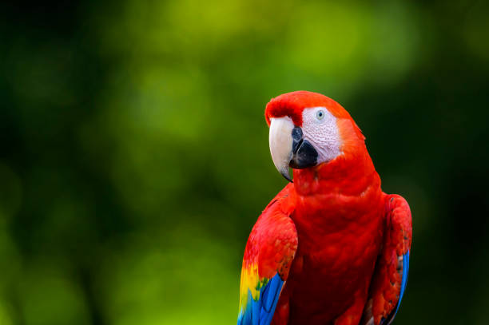

La Guacamaya Venezolana

La guacamaya venezolanas no solo son aves hermosas y coloridas, sino que representan un símbolo de la rica biodiversidad del país. Estas aves habitan principalmente en zonas selváticas y tropicales, donde encuentran abundante alimento y lugares seguros para anidar. La guacamaya en Venezuela, especialmente en Caracas, son aves muy populares y apreciadas. Son conocidas por su plumaje colorido, sus gritos y su capacidad de aprender palabras. Algunas especies comunes son la guacamaya roja (Ara macao), la guacamaya bandera (Ara militaris) y la guacamaya verde (Ara militaris)
Guacamaya Venezolana y Todo lo que Debes Saber

La guacamaya viven en parejas o grandes bandadas. Se alimentan de frutos, semillas y arcilla para neutralizar toxinas. Forman vínculos de por vida y protegen sus nidos de depredadores. Sin embargo, la pérdida de hábitat amenaza su supervivencia. Especies de guacamaya en Venezuela: Guacamaya roja (Ara macao): Es una de las guacamaya más grandes y coloridas, con un plumaje rojo, amarillo y azul. Guacamaya bandera (Ara militaris): Se caracteriza por su plumaje de colores vivos, principalmente rojo, con plumas azules y amarillas en las alas. Guacamaya verde (Ara militaris): Presenta un plumaje verde oscuro, con una diadema escarlata y rayas finas pardas y rojas en la cara. Características y comportamiento: Tamaño: Pueden alcanzar hasta 90 centímetros de largo. Hábitat: Se encuentran en bosques tropicales, sabanas y manglares. Alimentación: Son omnívoras y se alimentan de semillas, frutos, insectos y otros alimentos. Comportamiento social: Son aves sociales que viven en bandadas. Relación con los humanos: Algunas guacamayas se han convertido en mascotas de la capital, según el blog de National Geographic. Importancia cultural: Guardianas: Las guacamayas eran consideradas guardianas por las tribus indígenas venezolanas. Símbolo de la naturaleza: Para muchas personas en Caracas, las guacamayas son un símbolo de la naturaleza en medio de la ciudad. Mascotas: Son muy populares como mascotas debido a su belleza y capacidad de aprendizaje. Amenazas: Pérdida de hábitat: La destrucción de los bosques tropicales amenaza a las guacamayas. Comercio ilegal: El comercio de guacamayas como mascotas es una amenaza para las poblaciones salvajes.
Galeria de la guacamaya venezolana


 


Contactos
¿Quieres aprender más sobre las guacamayas venezolanas? Visita la página de Wikipedia